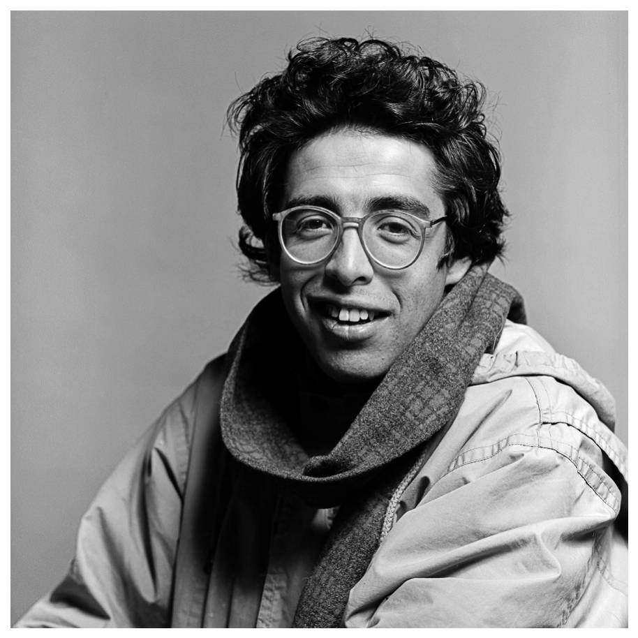
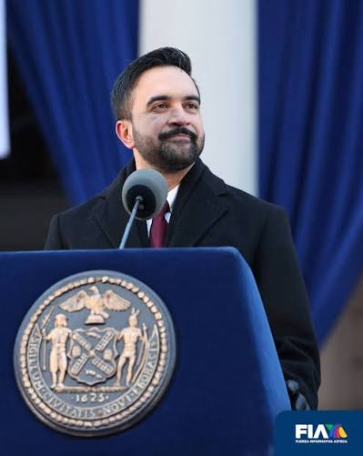
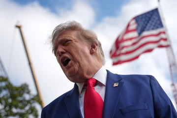

Liderazgos políticos

Colombia - Positivo[Líder Político Positivo en Colombia: Jaime Garzón]
Sustentación:
Jaime Garzón representa un hito en la historia política y social de Colombia. A través del humor y la sátira política, logró desmantelar las dinámicas de poder de las élites, haciendo accesible el debate público a sectores populares que históricamente habían sido ajenos a la política. Personajes como Heriberto de la Calle o Néstor Elí convirtieron la comedia en una herramienta pedagógica de denuncia contra la corrupción, el clientelismo y la desigualdad.
Más allá de su faceta como humorista y periodista, Garzón ejerció un liderazgo activo en la mediación humanitaria para la liberación de secuestrados y la búsqueda de la paz. Su mayor legado radica en su constante llamado a la juventud para que asumiera las riendas del país y no delegara su futuro a las clases dirigentes tradicionales. Su asesinato en 1999 silenció una voz crítica indispensable, pero consolidó su figura como un símbolo ético de la pedagogía ciudadana y el poder transformador de la palabra.
[Líder Político Negativo en Colombia: Álvaro Uribe Vélez]
Sustentación:
A pesar de haber contado con una amplia base de apoyo popular durante sus mandatos presidenciales, la gestión e influencia de Álvaro Uribe Vélez generaron retrocesos significativos en materia de derechos humanos y fortalecimiento democrático. Su política de "Seguridad Democrática" estuvo rodeada de graves controversias éticas y judiciales, siendo la más trágica la ocurrencia sistemática de las ejecuciones extrajudiciales, conocidas como "falsos positivos", donde miles de jóvenes inocentes fueron asesinados por la fuerza pública para presentar resultados operacionales.
Asimismo, sus administraciones se vieron empañadas por la infiltración del paramilitarismo en las instituciones del Estado (la parapolítica), el uso del organismo de inteligencia estatal (DAS) para perseguir ilegalmente a magistrados, periodistas y opositores, y un discurso constante de estigmatización hacia la protesta social y la oposición política. Esta visión absolutista del poder debilitó el contrapeso de poderes e impregnó la cultura política del país de una profunda polarización.

Internacional - Positivo[Líder Político Positivo Internacional: Zohran Kwame Mamdani]
Sustentación:
Zohran Kwame Mamdani, miembro de la Asamblea del Estado de Nueva York, encarna un liderazgo progresista centrado en el bienestar de las clases trabajadoras y las comunidades tradicionalmente excluidas. Su ejercicio político destaca por fundamentarse en propuestas concretas para dignificar la vida cotidiana en una de las ciudades más desiguales del mundo, abogando por la congelación de los arriendos, la congelación de tarifas y mejora del transporte público, y la garantía de vivienda como un derecho humano.
Mamdani representa un modelo de gestión pública con vocación comunitaria y transparencia financiera, rechazando el financiamiento de grandes corporaciones para mantener su independencia política. Su capacidad para conectar la teoría política con las necesidades materiales de la ciudadanía demuestra que es posible ejercer la representación pública con ética, empatía y enfoque redistributivo en contextos urbanos complejos.

Internacional - Negativo[Líder Político Negativo Internacional: Donald Trump]
Sustentación:
El ejercicio político de Donald Trump durante su presidencia y trayectoria pública ha representado un deterioro sistemático de los valores democráticos y el respeto universal a los derechos humanos. Su discurso, profundamente populista y divisivo, ha utilizado la estigmatización y la xenofobia hacia poblaciones migrantes y minorías raciales como estrategia de movilización electoral, promoviendo políticas represivas en fronteras que derivaron en la separación de familias e inocentes.
A nivel institucional, su retórica vulneró de manera recurrente la independencia del poder judicial, la libertad de prensa y la confianza en los procesos electorales democráticos, culminando en hechos sin precedentes como la instigación al asalto del Capitolio de los Estados Unidos en 2021. Su desdén por los tratados ambientales internacionales y por las garantías civiles fundamentales consolida su figura como un referente de liderazgo autoritario y regresivo en el panorama contemporáneo.